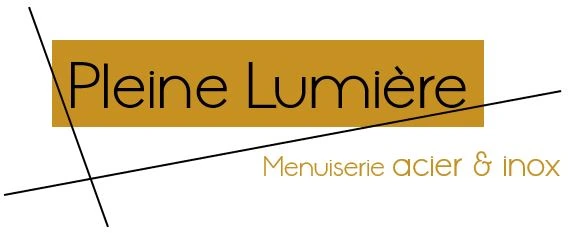
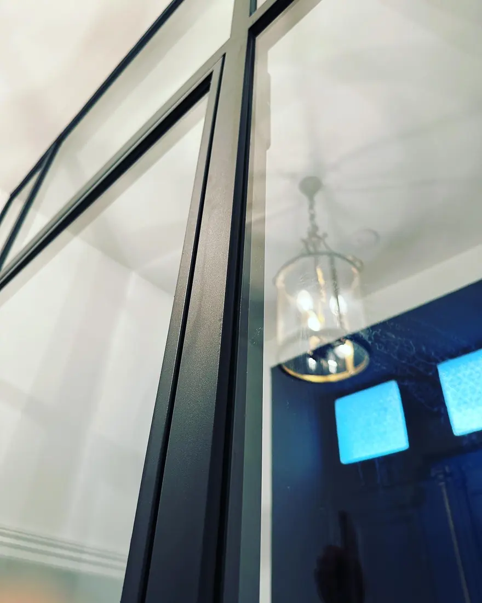
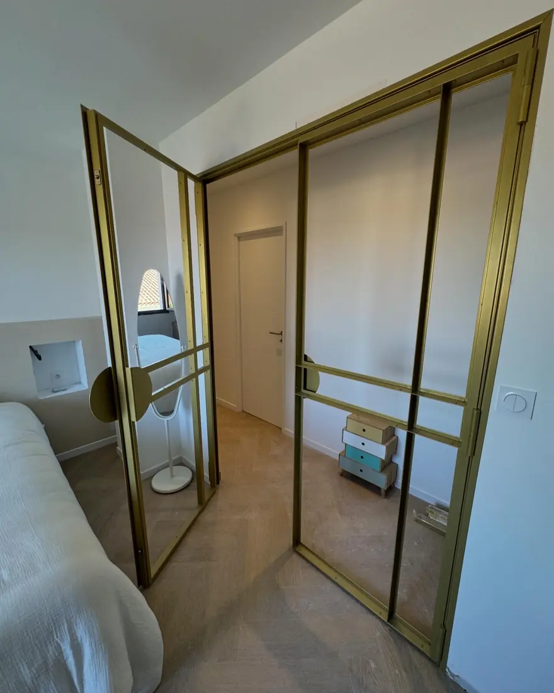
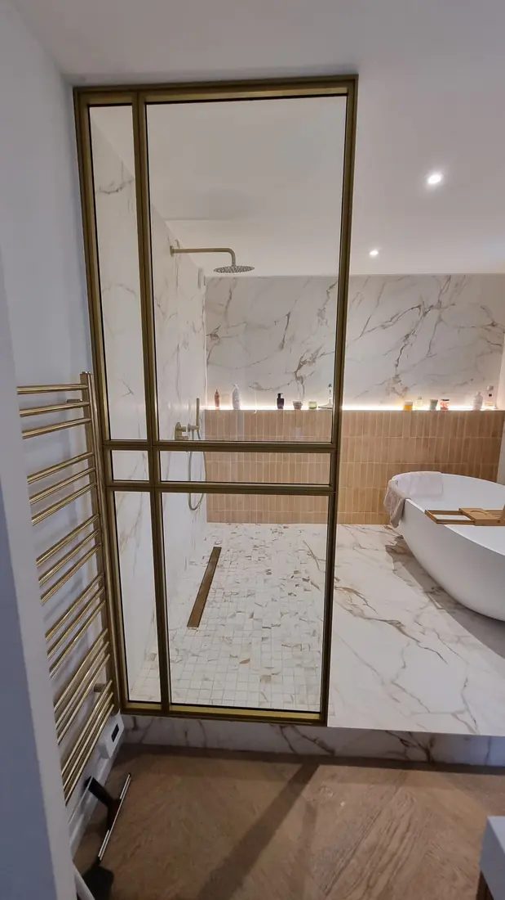
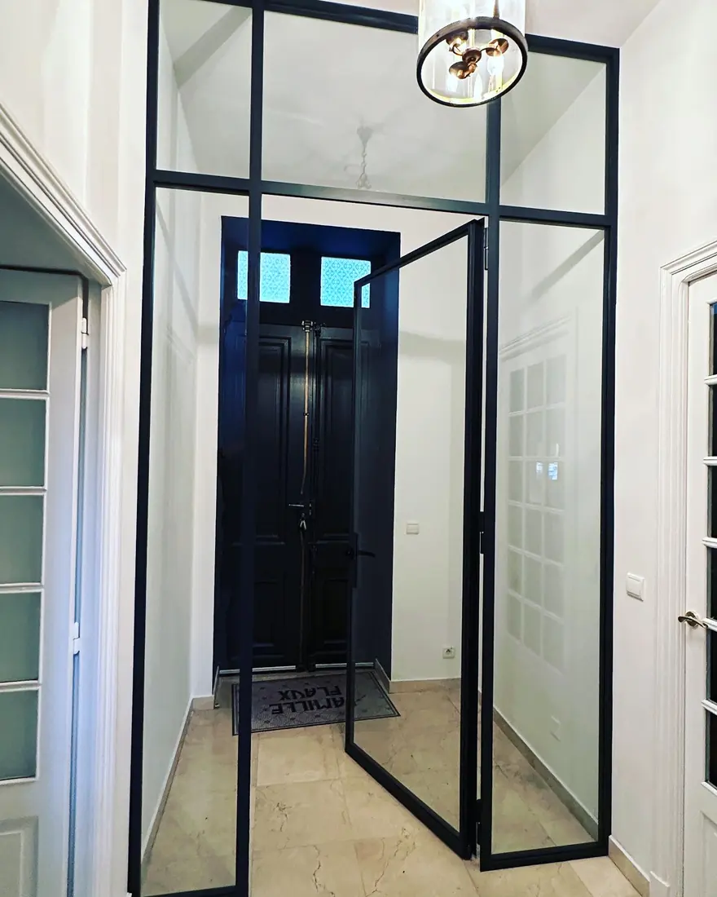

Pleine Lumière®
La collection de menuiserie acier imaginée et déposée par FMG Metal Studio. Fenêtres, portes et verrières à la française, dessinées pour faire entrer la lumière tout en conservant la finesse et la tenue du métal.

La rencontre de la métallerie et de la menuiserie
Pleine Lumière® est née d'un constat : les menuiseries acier fines et élégantes, inspirées des ateliers et verrières du XIXe siècle, sont rares à trouver en véritable sur-mesure. Nous avons développé un savoir-faire spécifique, profilés acier, vitrages sur mesure, quincaillerie soignée, pour proposer des ouvrages aussi précis qu'une menuiserie et aussi robustes qu'un ouvrage métallique.

Ce que couvre Pleine Lumière®
-
Fenêtres acier
Fenêtres à la française, profilés fins, simple ou double vitrage selon les besoins thermiques.
-
Portes & portes-fenêtres
Portes d'entrée, portes-fenêtres et verrières d'intérieur, avec ou sans imposte.
-
Verrières & cloisons
Verrières d'atelier, cloisons vitrées, séparations d'espace en acier et verre.






Un projet de menuiserie acier ?
Parlons de vos ouvertures, verrières ou cloisons vitrées sur mesure.
Nous contacter